With few exceptions, the multitude of reactions discussed in this and other introductory texts are classified as ionic reactions. By this we mean that nucleophilic and electrophilic sites in reacting molecules bond to each other. Furthermore, charged species such as carbocations, carbanions, conjugate acids and conjugate bases are often intermediates on the reaction path, the overall transformation taking place in two or more discrete steps. Ionic reactions normally occur in solution, and changes in solvents may have dramatic consequences. Examples of ionic reactions include:
(1) Nucleophilic Substitution of Alkyl Halides. (2) Elimination Reactions of Alkyl Halides. (3) Addition of Brønsted Acids to Alkenes. (4) Oxidation of Alcohols. (5) Electrophilic Aromatic Substitution. (6) Addition of Organometallic Reagents to Aldehydes, Ketones and Carboxylic Acid Derivatives. (7) Acylation of Nucleophilic Substrates (8) Alkylation of Enolate Anions. (9) Claisen and Aldol Condensations.
Here we shall consider two other classes of organic reactions:
Free-Radical Reactions
&
Pericyclic Reactions
One type of "free-radical reaction", alkane halogenation has already been described. Reactions of this kind have received increasing attention, thanks to their great importance in industrial chemistry. Indeed, the study of free-radical polymerization of alkene monomers has opened the door to modern polymer chemistry. The term "pericyclic reaction" encompasses a large and varied group of concerted thermal and photochemical transformations. An example, previously described, is the Diels-Alder cycloaddition of dienes and dienophiles. In contrast to ionic reactions, both free radical and pericyclic reactions may occur in the gas phase, as well as in solution in various solvents. Also, these nonionic reactions are more tolerant of spectator functional groups than are many ionic reactions.
A radical is an atomic or molecular species having an unpaired, or odd, electron. Some radicals, such as nitric oxide (NO), are relatively stable, but most are so reactive that their isolation and long-term study is not possible under normal laboratory conditions. The electrons in most stable organic compounds are paired in atomic or molecular orbitals, so the total electron count is an even number. Molecular oxygen (O2) is a rare example of a stable biradical (two unpaired electrons having the same spin), with an even number of electrons.
Early chemists used the term "radical" for nomenclature purposes, much as we now use the term "group". Many doubted that such open-valenced species could exist, although there was circumstantial evidence for their participation in gas phase reactions. Credit for the first isolation and characterization of a "free radical" goes to Moses Gomberg, a young instructor at the University of Michigan. In 1900 Gomberg attempted a synthesis of hexaphenylethane by reacting triphenylmethyl chloride with finely divided metals such as silver and zinc. When air was excluded from the reaction, he obtained a yellow solution, the color of which darkened reversibly on heating and cooling. This solution yielded a colorless, crystalline C38H30 hydrocarbon which Gomberg assumed to be hexaphenylethane.
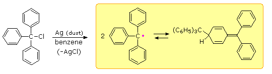
If the yellow solution was exposed to air (or oxygen) a C38H30O2 peroxide was obtained, and identified by reduction to the known alcohol, triphenylmethanol. In a similar fashion the yellow solution reacted with iodine to produce triphenylmethyl iodide. These reactions will be displayed by clicking on the diagram above. Gomberg concluded that the colored solutions contained reactive triphenylmethyl free radicals, formed by thermal dissociation of their dimer (Keq = 2 • 10–4 at 25º C). The exceptional stability of this carbon radical is attributed to odd electron delocalization into the three phenyl rings. Discrete Kekule formulas demonstrate that this benzyl-like delocalization places the electron on ortho and para carbons, but not on meta carbons. Clicking on the diagram a third time will display this delocalization in a general way. The resonance structures drawn here may give the impression that the triphenylmethyl radical is planar (flat). Actually the phenyl groups are turned by about 35º, producing a shape similar to a three bladed propellor. Despite this twist, the p-pi orbital overlap is still over 80%, so the electron delocalization is not seriously diminished. To see a model of this unusual radical .
More than fifty years later, the reactive dimer of triphenylmethyl radical was shown to be the para-coupled compound drawn above and not hexaphenylethane. The steric crowding of phenyl groups in the simple ethane dimer is apparently so severe that bonding between two 3º-carbon atoms is prohibited. Since the electron delocalization noted above places radical character at the para carbons of the phenyl groups, bonding to this relatively unhindered location is preferred, although at the cost of one benzene ring's aromaticity. If the para-locations are themselves hindered by large meta substituents, then an unstable hexaarylethane may actually be formed.
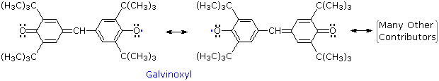
Other relatively stable radicals, such as galvinoxyl have been prepared and studied. These species usually owe their stability to a combination of odd electron delocalization and steric hindrance to dimerization, as the ortho tert-butyl groups in galvinoxyl demonstrate. The term "free radical" is now loosely applied to all radical intermediates, stabilized or not.
Only triphenymethyl and a few other stabilized radicals may be generated in concentrations suitable for examination by traditional laboratory methods. Evidence for the transient existence of more reactive radical species in chemical reactions usually requires special techniques, including low-temperature isolation in solids and high speed spectroscopic probes. However, an interesting chemical detection of the methyl radical was carried out by the Austrian chemist Fritz Paneth not long after Gomberg's preparation of triphenylmethyl radical. The Paneth experiment involved gas phase thermal decomposition of tetramethyllead to methyl radicals and lead atoms in a glass tube. The initial flow of the lead compound through the tube is shown in the following illustration, and the consequences of applying strong heat to the tube will be displayed by repetitive clicking on the diagram. The text box beneath the diagram provides commentary.
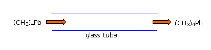
The same unpaired or odd electron that renders most radical intermediates unstable and highly reactive may be induced to leave a characteristic "calling card" by a magnetic resonance phenomenon called "electron spin resonance" (esr) or "electron paramagnetic resonance" (epr). Just as a proton (spin = 1/2) will occupy one of two energy states in a strong external magnetic field, giving rise to nmr spectroscopy; an electron (spin = 1/2) may also assume two energy states in an external field. Because the magnetic moment of an electron is roughly a thousand times larger than that of a proton, the energy difference between the spin states falls in the microwave region of the spectrum (assuming a moderate magnetic field strength). The lifetime of electron spin states is much shorter than nuclear spin states, so esr absorptions are much broader than nmr signals. One way of improving the signal to noise ratio in esr spectra is to display them as first derivatives rather than absorptions. These displays are illustrated on the left below. In practice, esr spectra may be quite complex, as shown by the derivative spectrum of triphenylmethyl radical on the right. This complexity is the result of hyperfine splitting of the resonance signal by protons and other nuclear spins, an interaction similar to spin-spin splitting in nmr spectroscopy. For example, the esr signal from methyl radicals, generated by x-radiation of solid methyl iodide at -200º C, is a 1:3:3:1 quartet (predicted by the n + 1 rule). The magnitude of signal splitting is much larger than nmr coupling constants (MHz rather than Hz), and is usually reported in units of gauss. The complexity of the triphenylmethyl spectrum is due to three different hyperfine splittings: 3 para hydrogens, 6 ortho hydrogens & 6 meta hydrogens. Ideally this should produce 196 lines, but imperfect resolution reduces the number observed.
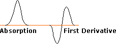
ESR Signal Types
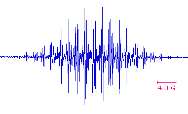
The homolytic cleavage of covalent bonds produces radicals, and since this is an endothermic process, it requires the introduction of energy from the surroundings. Heat serves this purpose by collisional interconversion of kinetic energy into vibrational energy, and the temperature required for bond homolysis will be proportional to the bond dissociation energy. Absorption of light may also lead to radical species by intra- or intermolecular conversion of the increased electronic energy into vibrational energy. As expected, weaker covalent bonds dissociate into radicals more readily than stronger covalent bonds. The following table lists standard bond energies (D) for the C–C, C–O and C–H bonds commonly found in organic compounds, together with bond energies for some weaker bonds that have been found useful for generating radicals. Approximate homolysis temperatures at which half the bonds are cleaved in one hour are also given.
At temperatures greater than 500º C, and in the absence of oxygen, mixtures of high molecular weight alkanes break down into smaller alkane and alkene fragments. This cracking process is important in the refining of crude petroleum because of the demand for lower boiling gasoline fractions. Free radicals, produced by homolysis of C–C bonds, are known to be intermediates in these transformations. Studies of model alkanes have shown that highly substituted C–C bonds undergo homolysis more readily than do unbranched alkanes. In practice, catalysts are used to lower effective cracking temperatures.
In contrast to stronger C–C and C–H bonds, the very weak O–O bonds of peroxides are cleaved at relatively low temperatures ( 80 to 150 ºC ), as shown in the following equations. The resulting oxy radicals may then initiate other reactions, or may decompose to carbon radicals, as noted in the shaded box. The most commonly used peroxide initiators are depicted in the first two equations. Organic azo compounds (R–N=N–R) are also heat sensitive, decomposing to alkyl radicals and nitrogen. Azobisisobutyronitrile (AIBN) is the most widely used radical initiator of this kind, decomposing slightly faster than benzoyl peroxide at 70 to 80 ºC. The thermodynamic stability of nitrogen provides an overall driving force for this decomposition, but its favorable rate undoubtedly reflects weaker than normal C-N bonds.
Compounds having absorption bands in the visible or near ultraviolet spectrum may be electronically excited to such a degree that weak covalent bonds undergo homolysis. Examples include the halogens Cl2, Br2 & I2 (bond dissociation energies are 58, 46 & 36 kcal/mole respectively), alkyl hypochlorites, nitrite esters and ketones. Equations illustrating these radical producing reactions are displayed below. The covalent bonds that undergo homolysis are colored red, and the unpaired electrons in the resulting radicals are colored pink. Ketones undergo n to π* electronic excitation near 300 nm. The resulting excited state is a diradical in which one of the odd electrons is localized on the oxygen atom. Cleavage of an alkyl group may then take place.
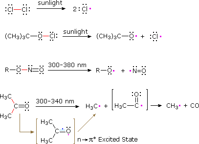
The action of inorganic oxidizing and reducing agents on organic compounds may involve electron transfers that produce radical or radical ionic species. Ferrous ion, for example, catalyzes the decomposition of hydrogen peroxide ( Fenton's reagent ) and organic peroxides. In some cases the radical intermediates formed in this manner are sufficiently stable to be studied in the absence of oxygen. The phenoxy radical formed in the second equation below is one such species, Würster's salt ( third equation ) is another.
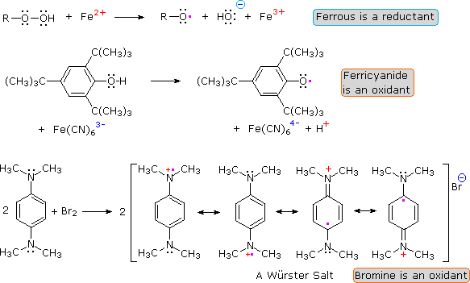
The alkali metals lithium, sodium and potassium reduce the carbonyl group of ketones to a deep blue radical anion called a "ketyl", shown in the following illustration. Subsequent chemical reactions of these useful intermediates are discussed elsewhere. A similar reduction of benzene and its derivatives also proceeds by way of radical anion intermediates.
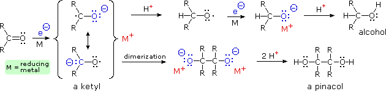
If free radical reactions are to be useful to organic chemists, methods for transferring the reactivity of the simple radicals generated by the previously described homolysis reactions to specific sites in substrate molecules must be devised. The most direct way of doing this is by an atom abstraction, as shown here.
R–H + X• –––> R• + H–X
Indeed, when X is Cl or Br, this is a key step in the alkane halogenation chain reaction. Hydrogen abstraction reactions of this kind are sensitive to the nature of both the attacking radical ( X•) and the R–H bond. This is illustrated by the relative rates of hydrogen abstraction given in the following table. Each horizontal row of data is normalized to 1º C–H (1.0), but there are also large differences between rows. Thus the rate of reaction of 1º C–H with Cl• is a thousand times faster than with Br•. However, the less reactive bromine atom shows much greater selectivity in discriminating between 1º, 2º and 3º C–H groups. Certain C–H bonds are so susceptible to radical attack that they react with atmospheric oxygen (a diradical) to form peroxides. Typical groups that exhibit this trait are 3º-alkyl, 2º & 3º-benzyl and alkoxy groups in ethers.
R–H + O2 –––> R• + •O2H –––> R–O–O–H
The exceptional facility with which S–H and Sn–H react with alkyl radicals makes thiophenol and trialkyltin hydrides excellent radical quenching agents, when present in excess. At equimolar or lower concentration they function well as radical transfer agents..
Hydrogen Donor
C2H6
RCH2R
R3CH
C6H5CH3
CH2=CH-CH2R
RCOCH3
C6H5SH
(C4H9)3SnH
Attacking Radical
CH3•
(CH3)3CO•
Cl•
Br•
Carbon halogen bonds, especially C–Br and C–I, are weaker than C–H bonds and react with alkyl and stannyl radicals to generate new alkyl radicals. This reaction has been put to practical use in a mild procedure for reducing alkyl halides to alkanes. The chain reaction sequence that accomplishes this reduction is shown here. By clicking on the diagram, three examples of this dehalogenation reaction will be displayed.
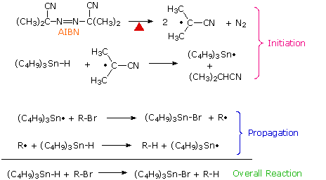
An important modification of this reduction is shown in the third example above. The use of equimolar amounts of tributyltin hydride in reactions presents certain problems, including the toxicity presented by organostannanes, difficulty in separating nonpolar stannanes, such as halides, bis(tributyltin) and bis(tributyltin) oxide from desired products, and formation of tin oxides by reaction with moisture. To reduce these difficulties, a catalytic amount of the stannanes may be used together with enough NaBH4 (or an equivalent reagent) to convert the tributyltin halides to the hydride. Indeed, the reduction is so facile that traces of peroxides in the reactants often initiate reaction without added AIBN.
The configurational preferences of different reactive intermediates were noted in an earlier section. Since the difference in energy between a planar radical and a rapidly inverting pyramidal radical is small, radicals generated at chiral centers generally lead to racemic products. However, unlike carbocation intermediates, which prefer to be planar, radicals tolerate being restricted to a pyramidal configuration. The following illustration shows the decomposition of a bicyclic bridgehead acyl peroxide. Initial formation of a carboxyl radical is followed by loss of carbon dioxide to give a pyramidal bridgehead radical. This radical abstracts a chlorine atom from the solvent, yielding the bridgehead chloride as the major product. Although this is a 3º-alkyl halide, it does not undergo SN1 solvolysis reactions because of the strain imposed on the carbocation intermediate by its pyramidal confinement.
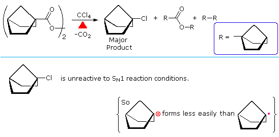
The concurrent formation of ester and dimeric cycloalkane products from acyl peroxides is common, and reflects a cage effect in homolysis reactions. When a pair of radicals is formed by homolysis, they are briefly held in proximity by the surrounding solvent molecules (the cage). Rapid decomposition to other radicals may occur, but until one or both of these radicals escape the solvent cage a significant degree of coupling (recombination) may occur. A general description of the cage effect will be displayed above by clicking on the diagram. Cage recombination of radicals may be sufficiently rapid to preserve the configuration of the generating species. An example will be shown above by clicking on the diagram a second time. Ester formation is clearly a cage product, whereas 2-chloro-1-phenylpropane comes largely from radicals that have escaped the cage and lost configurational identity. The chiral centers in these compounds are marked by asterisks.
For many years organic chemists considered free radical reactions to have limited applications, and to be of little interest outside some fields of industrial chemistry. This view has changed markedly, and important examples of substitution, addition and elimination reactions proceeding by way of radical intermediates have been developed and used in the synthesis of complex molecules. Since most free radical intermediates are very reactive and have short lifetimes, all the steps in a practical chain reaction sequence must be fast compared with possible competing reactions. This means that atom abstractions and radical additions should be exothermic, or only mildly endothermic. Both C–H and C–X abstractions satisfy this requirement, but the strong O–H bond does not. Also addition to C=C is energetically more favorable than addition to C=O; and when radicals add to certain C=O functions, they bond to the oxygen, not the carbon. Another characteristic of radical reaction sequences is fragmentation with expulsion of a small stable molecule, such as CO2, CO & N2.
The alkyl halide reduction described above is one example of a radical substitution reaction. Two other substitution reactions are shown in the diagram below. The first two equations illustrate a useful procedure for reducing alcohols to alkanes, known as "Barton-McCombie deoxygenation". A thionoester, such as a xanthate, is first prepared from the alcohol, and then treated with tributyltin hydride and a radical initiator. Phenylsilane may be substituted for the stannane as a radical carrier. In either case a radical (X• )adds to the C=S function, and the resulting •C(OR)–S–X species fragments to R• and XSC=O. This reduction is particularly useful for 2º-alcohols, as in the second equation. Deoxygenation of 1º-alcohols is often effected by LiAlH4 reduction of tosylate derivatives, a technique that is less satisfactory for 2º-alcohols. The second equation shows an interesting substitution of sulfur for bromine. Here the phenyl radical intermediate bonds to sulfur, followed by homolysis of the tert-butyl substituent.
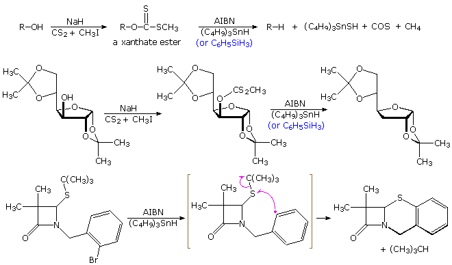
By clicking on the diagram, a variation of the Barton-McCombie, called "Barton decarboxylation" will be displayed above. Here advantage is taken of e weak N–O bond to generate a carboxyl radical, which rapidly decarboxylates to an alkyl radical. The N-hydroxy-2-thiopyridone derivative of a carboxylic acid or acid chloride is readily prepared. Photolysis in the presence of a thiol as the hydrogen transfer agent initiates the chain reaction shown above the light blue line. The alkyl radical thus prepared (in pink brackets) may then accept a hydrogen or halogen atom, depending on other reagents chosen for the reaction. The reaction shown below the blue line illustrates the versatility of this procedure.
Addition reactions to carbon:carbon double bonds are among the most important free radical reactions employed by chemists. The anti-Markovnikov addition of HBr to alkenes is one such reaction, and the peroxide initiated addition of carbon tetrachloride to 1-hexene is another. As the following equations demonstrate, radical addition to a substituted double bond is regiospecific (i.e. the more stable product radical is preferentially formed in the chain addition process).
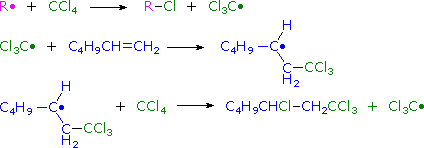
The following diagram provides other examples of radical addition to double bonds. The first two equations show how different radicals may be generated selectively from the same compound. Although 2-propanol has three different groups of hydrogen, simple atom abstraction by an oxy radical occurs exclusively at the 3º-carbon bonded to oxygen. By using the xanthate derivative, the carbon-oxygen bond may be homolytically cleaved to form the isopropyl radical. Double bond conjugated with carbonyl or nitrile functions are particularly good radical acceptors, as shown in the last two examples.
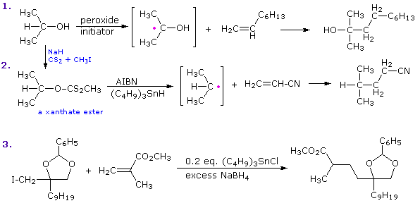
If a radical transfer reagent, such as an alkyl halide or xanthate, is not present in excess, an alkene derived radical may exist long enough to add to other alkene molecules in a repetitive fashion, leading to a polymeric product, as shown here. The new C–C bond(s) are colored magenta.
~~CH2CHR• + CH2=CHR –––> ~~CH2CHR–CH2CHR• + CH2=CHR –––> ~~CH2CHR–CH2CHR–CH2CHR•
Indeed, free radical polymerization of simple substituted alkenes is so facile that bulk quantities of these compounds must be protected by small amounts of radical inhibitors during storage. These inhibitors, or radical scavengers, may themselves be radicals (e.g. oxygen and galvinoxyl) or compounds that react rapidly with propagating radicals to produce stable radical species that terminate the chain. Inhibitors include quinones, substituted phenols, aryl amines and nitro compounds. For a more detailed discussion of free radical polymerization Click Here.
If a radical is joined to a double bond by a chain of three or more carbons intramolecular addition generates a ring. The regioselectivity of such additions is governed more by stereoelectronic factors than by substituents on the double bond. In the first two examples shown below, double bond substitution would favor formation of a six-membered ring, but five-membered ring formation by way of a 1º-cyclized radical dominates the products. Likewise, in reaction 3 a six-membered ring is formed preferentially over an alternative seven-membered ring. In each of the examples the ring forming bond is colored red. By clicking on the diagram some interesting examples of tandem radical cyclizations will be shown. Note that these reactions tolerate a wide variety of functional groups.
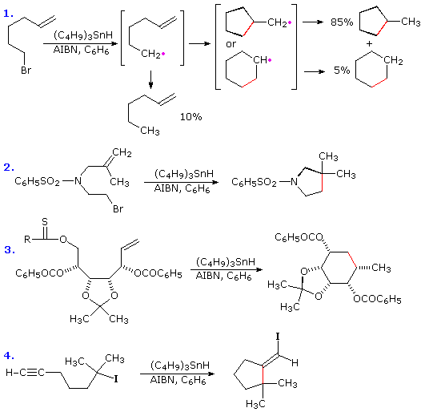
The stereoelectronic factor in this reaction is defined by the preferred mode of approach of a radical as it bonds to the pi-electron system of an alkene function. As shown in the following diagram, this is at an angle nearly 20º off the perpendicular to the plane of the double bond. Because of this requirement, many cyclizations to moderately sized rings proceed by radical attack at the nearest carbon of the double bond, regardless of substitution. Bonding to the distal carbon is constrained by the structure of the connecting chain. Of course, if the carbon chain tethering the radical site to the double bond is long enough, bonding to either of the double bond carbons accommodates the stereoelectronic factor, and the product is again determined by substitution. An example will be displayed by clicking on the diagram.
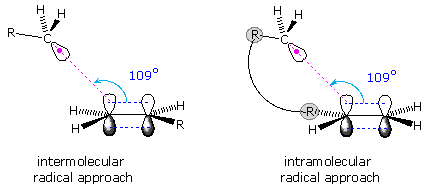
The use of thionoesters, such as a xanthates, as radical generating functions was described above, and these groups may also serve as excellent radical leaving groups. This property has been put to use in the eliminative reduction of vicinal-glycols to alkenes, as illustrated by the following example. Once again, the tolerance of radical reactions for a variety of functional groups is demonstrated. An industrial preparation of vinyl chloride from 1,2-dichloroethane, made by adding chlorine to ethylene, proceeds by elimination of a chlorine atom from an intermediate carbon radical. The isomer 1,1-dichloroethane does not undergo an equivalent radical chain elimination. Equations for this process will be shown below by clicking on the diagram.
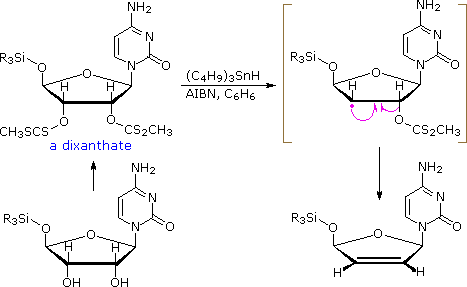
Radical coupling (recombination) reactions are very fast, having activation energies near zero. Such reactions were noted earlier in the context of the cage effect. The only reason radical coupling reactions do not dominate free radical chemistry is that most radicals have very short lifetimes and are present in very low concentration. Consequently, if short lived radicals are to contribute to useful synthetic procedures by way of a radical coupling, all the events leading up to the coupling must take place in a solvent cage. To this end, a clever reaction sequence, resulting in intramolecular functionalization of an isolated methyl group, was designed by Derek Barton, and has been named the "Barton reaction". A general outline of this procedure is shown below. A pair of radicals is generated by photohomolysis of the weak N–O bond of a nitrite ester. The oxy radical abstracts a hydrogen atom from a nearby carbon, and the resulting radical couples with •NO to give a nitroso compound. Subsequent tautomerism of the nitroso product, followed by hydrolysis, converts this function to a carbonyl group. If oxygen is present, it bonds to the carbon radical before the •NO coupling occurs. This eventually leads to a nitrate ester on the newly functionalized carbon.
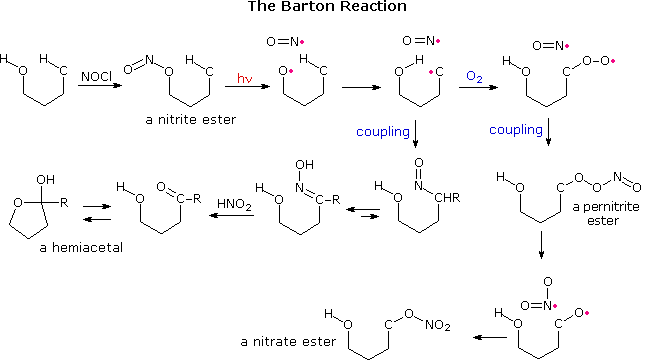
For the Barton reaction to work, it is necessary that the initial oxy radical be firmly oriented close to the C–H hydrogen. This requirement is satisfied by appropriate steroid substrates, as demonstrated above by clicking on the diagram. The nitrite ester of an axial oriented 11-hydroxyl group is prepared by reaction with nitrosyl chloride, 2. Photolysis generates an oxy radical that is located close to the 18-methyl group. Hydrogen abstraction, followed by coupling of the CH2• to •NO gave a nitroso compound that tautomerizes to an oxime, 3. Hydrolysis of 3 by nitrous acid yields the corresponding aldehyde, which immediately forms the bis-hemiacetal, 4. In the presence of oxygen, the corresponding nitrate ester, 6, is produced. From models it appears that the axial-11-hydroxyl group is equally close to both the 18- and 19-methyl groups. However, the two double bonds in ring A slightly change the orientation of the 19-methyl group, and hydrogen atom abstraction from that location does not occur. If the double bond between carbons 1 & 2 is removed the orientation of the the 19-methyl group improves, and hydrogen atom abstraction from both methyl sites takes place. This will be illustrated in the diagram by clicking on it a second time. Note that the 1º-radical at C-19 adds to the double bond before coupling with •NO takes place. All these radical reactions must occur rapidly in a solvent cage before the •NO escapes.
Stabilized free radicals have sufficiently long lifetimes to permit coupling outside solvent cage confinement. The following diagram shows two such coupling reactions. The first is the photochemical reduction of benzophenone to benzopinacol. The second is an example of the oxidative coupling of phenols, a transformation that is an important step in the biosynthesis of alkaloids. By clicking on the diagram a stepwise description of the first reaction will be displayed. Clicking a second time shows a mechanism for the phenol coupling.
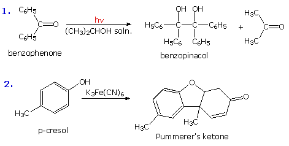
Return to Table of Contents